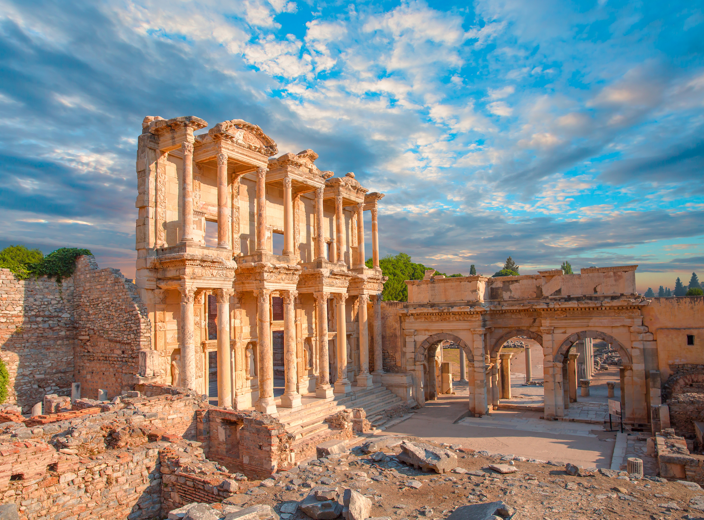

İzmir Efes Antik Kent
İzmir İli, Selçuk İlçesi sınırları içindeki antik Efes kentinin ilk kuruluşu M.Ö. 6000 yıllarına, kadar inmektedir. Son yıllarda yapılan araştırma ve kazılarda Efes çevresindeki höyükler (tarih öncesi tepe yerleşimleri) ve kalenin bulunduğu Ayasuluk Tepesi'nde Tunç Çağları ve Hittitlere ait yerleşimler saptanmıştır. Hititler Döneminde kentin adı Apasas'tır. M.Ö. 1050 yıllarında Yunanistan'dan gelen göçmenlerin de yaşamaya başladığı liman kenti Efes, M.Ö. 560 yılında Artemis Tapınağı çevresine taşınmıştır. Bugün gezilen Efes ise, Büyük İskender'in generallerinden Lysimakhos tarafından M.Ö. 300 yıllarında kurulmuştur. Hellenistik ve Roma dönemlerinde en görkemli zamanlarını yaşayan Efes, Asya eyaletinin başkenti ve en büyük liman kenti olarak 200.000 kişilik nüfusa sahipti. Efes, Bizans Dönemi tekrar yer değiştirmiş ve ilk kez kurulduğu Selçuk'taki Ayasuluk Tepesi'ne gelmiştir.

Aydın Şirince Köyü
Tarihi oldukça eskidir. Zamanında maddi durumu iyi olan aileler Şirince’de yaşamıştır. Şirince’nin güzelliğinden dolayı herkes akın etmesin diye ismini Çirkince olarak söylemişler. 1924 yılındaki göç ile Şirince’deki Rumlar gidince yerlerine Selanik göçmeni olan Türkler gelmiştir. İzmir valisi Şirince’ye gelerek ziyaret etmiş ve köyü çok beğenmiştir. İsminin Çirkince olmasının köye uygun olmadığının düşünerek köyün adını Şirince olarak değiştirmiştir.

Balıkkesir Cunda Adası
Ayvalık Cunda Adası’ndaki yerleşimin tarihi 3500 yıl öncesine kadar uzanıyor. Osmanlı döneminde ada, Ortodoks Rumlar için önemli bir dini merkezdi ve onların kullandığı adı da “kokulu ada” anlamına gelen “Moshonis”ti. Piri Reis 1513’te yazdığı “Kitab-ı Bahriye”de bölgeden Yunt Adaları olarak bahsediyor. Piri Reis; adaların üzerinde başıboş gezen eşek, at ve kısraklardan esinlenerek adalara Yunt ismini vermiş. Ardından Osmanlıca yazımının yanlış okunarak Cunda’ya dönüştüğü biliniyor.
Kırklareli Dupnisa Mağarası
Yaklaşık 180 milyon yıl önce oluşmuş olan Dupnisa Mağarası mermerler içerisinde gelişen, birbirine bağlı iki kat ve üç mağaradan oluşmuştur. Toplam uzunluğu 2720 metre olan sistemin üst katını, Kuru ve Kız mağaraları oluşturmaktadır. Gelişimini tamamlamış bu mağaralardan 50-60 metre aşağıda Sulu Mağara yer alır. İçinden devamlı akışı olan bir yer altı nehri akan ve deniz yüzeyinden 345 metre yukarıda giriş ağzı bulunan bu mağaranın toplam uzunluğu 1977 metredir. Son noktası ise, girişten 61 metre daha yukarıda yer alır. Istıranca Dağları'nı derin vadilerle yardığı, vahşi görünüme sahip bir bölgede yer alır.
Yalova Dipsiz Göl
Kent ormanından 2,5 Km mesafede 530 metre rakımda bulunan büyük dipsiz göl ve bu gölden 1,5 Km mesafede 570 metre rakımda olan küçük dipsiz göl çevrelerinde bulunan zengin orman florası ve yaban hayatı yönünden yedi göller bölgesindeki güzellikleri aratmayacak niteliktedir.

Ankara Anıtkabir
Atatürk Kurtuluş Savaşı'nın ve Türk İnkılâplarının büyük önderi Türkiye Cumhuriyeti'nin kurucusu Mustafa Kemal Atatürk'ün, Türk vatanının bağımsızlığını kazanması için giriştiği savaş ve Türk milletini çağdaş uygarlık seviyesine ulaştırmak amacıyla gerçekleştirdiği inkılâplarla geçen yaşamı 57 yıl sürmüş ve Büyük Önder 10 Kasım 1938'de ebediyete intikal etmiştir. Mustafa Kemal Atatürk, Türkiye'yi bütün kurumları ile çağdaş uygarlığın bir üyesi yapan, insanlık tarihine mal olmuş büyük bir önderdir. O'nun yüceliğini her yönüyle temsil edecek, ilke ve inkılâpları ile çağdaşlaşmaya yönelik düşüncelerini yansıtacak bir anıtmezar yapma fikri, Atatürk'ü kaybetmenin derin hüznü içindeki Türk milletinin ortak isteği olarak belirmiş ve yapımına karar verilmiştir.Bütün özellikleriyle yapıldığı dönemin en iyi örneklerinden biri olan Anıtkabir yaklaşık 750.000 m² lik bir alanı kaplamakta olup, Barış Parkı ve Anıt Bloku olarak iki kısmı vardır.
,

Elazığ Harput Kalesi
Kale, MÖ 8. yüzyılda Urartu Krallığı tarafından inşa edilmiştir . MÖ 6. yüzyıldan itibaren Pers hakimiyeti altına girmiştir. MÖ 1. yüzyıl ile MS 11. yüzyıl arasında Part, Roma, Sasani, Bizans ve Abbasiler ve 11. yüzyılın sonuna kadar Bizans hakimiyeti altında devam etmiştir. 1085 yılında Çubukoğulları, 1112 yılında Artukoğulları, 1234 yılında Selçukluların egemenliği altında kalmıştır. Kale, Artuklu Beyi Belek Gazi'nin ve Selçuklu Beyi Alaeddin Keykubad'ın hükûmet merkezi olmuş, 1366 yılında Dulkadiroğulları ve Akkoyunlu Devletleri arasında mücadelelerden dolayı sık sık hakimiyet değişikliği yaşanmıştır. Kale 1465 yılında Akkoyunlu hükümdarı Hasan Bahadır Han tarafından ele geçirilerek Akkoyunlu idaresine alınmıştır. Harput Bölgesi ve Kalesi 1515 yılında Yavuz Sultan Selim tarafından Osmanlı İmparatorluğu'nun idaresine alınmıştır.[1]

Bingöl Yüzen Adalar
Solhan İlçesi'ne bağlı Hazarşah Köyü Aksakal göl mezrasındaki Yüzen Ada, o yörede yaşayan halk tarafından keşfedilmiştir. Bingöl-Solhan karayolunda 4.5 kilometre uzaklıktadır. Yüzen Ada tamamen doğal bir oluşumdur. Gölün üç tarafı dağlar ve tepelerle çevrilmiş düz arazi üzerinde bulunan krater gölü konumundadır. Gölün şimdiki alanı 300 metrekarenin üzerindedir. Gölün derinliğinin 50 metreden fazla olduğu düşünülmektedir. Yaz ve kış aylarında su seviyesi aynı kalmaktadır.
Ordu Yason Burnu
Yason Burnu yarımadası, doğal görünüme sahip bir yarımadadır.Eski Ordu-Samsun kara yolu üzerindedir. Ordu - Giresun Havalimanına 42km, Ordu'ya 35km, Perşembe'ye 20'dir. Yason burnunun önü taşlık olmakla beraber, burada gemiler durabilmektedir. Yason adı, Argonotlar'la beraber burada karaya çıkan Yason’dan kalmıştır. Burunun alt tarafında 'Panaya' adında eski manastır/kilise vardır. Çaytepe sınırları içinde olan yarımada üzerinde Panaya Kilisesi yer alır.

Şanlıurfa Balıklı Göl
İbrahim peygamber, devrin zalim hükümdarı Nemrut (Babil hükümdarı) ve halkının taptığı putlarla mücadele etmeye, tek tanrı fikrini savunmaya başlayınca Nemrut tarafından bugünkü Urfa Kalesi'nin bulunduğu tepeden ateşe atılır. Bu sırada Allah tarafından ateşe "Ey ateş, İbrahim'e karşı serin ve selamet ol" emri verilir. Bu emir üzerine ateş suya, odunlar da balığa dönüşür. İbrahim bir gül bahçesinin içerisine sağ olarak düşer. İbrahim'in düştüğü yer Halilü'r-Rahman Gölü'dür. Rivayete göre Nemrut'un kızı Zeliha da İbrahim'e inandığından onun peşinden atlar. Zeliha'nın düştüğü yerde ise Ayn-i Zeliha Gölü oluşmuştur. Kur'an ve Hadis kitaplarında bu olayla ilgili ayet veya hadis yoktur.[8] 1900-1960 arası yakın tarihte Urfa halkı tarafından Yahudi mitolojisinden İslam mitolojisine eklentiler yapılarak ortaya çıkmış bir anlatıdır.[9] Yahudi mitolojisi sadece İbrahim'in Urfa'da ateşten kurtulduğunu söyler. Urfalı Müslümanlar tarafından bu olayın Balıklıgöl'de yaşandığı ve mite kale sütunları (mancınık), havuz ve balıklar da eklenmiştir. Ek olarak İbrahim'in Balıklıgöl platosundaki bir mağarada (İbrahim Mağarası) doğduğunu iddia etmektedir. İslam mitolojisindeki anlatılar farklı tarihlerdeki 5 farklı devletle çakışıp büyük tarihi çelişkiler barındırmaktadır.